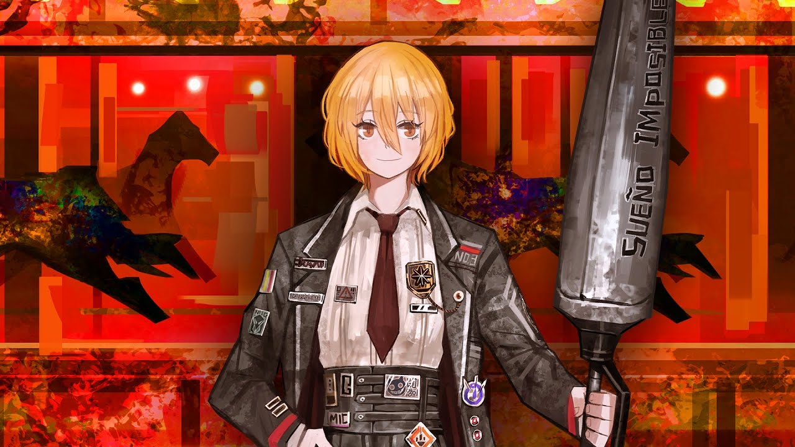
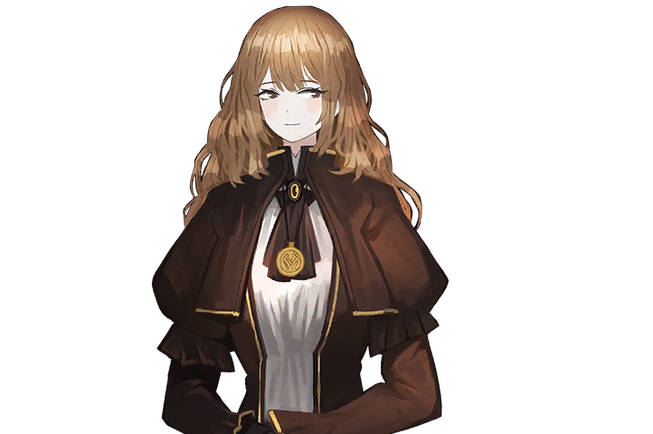

Merusault
Tremor
Designated Sinner #5 of Limbus Company's LCB department. A reserved and complacent man with a desire to be clearly communicated with.
DetailsFrom Project Moon's Limbus Company, a single-player turned-based RPG
Tremor
Designated Sinner #5 of Limbus Company's LCB department. A reserved and complacent man with a desire to be clearly communicated with.
Details
Sinking
Designated Sinner #1 of Limbus Company's LCB department. Researcher and Architect.
Details
Rupture
Designated Sinner #12 of Limbus Company's LCB department. Judgemental and strict war veteran who isn't afraid to speak her mind.
Details
Bleed
Designated Sinner #3 of Limbus Company's LCB department. A rambunctious and steadfast woman with a strong sense of JUSTICE!!!!
Details
Heartbreak
The only daughter of the Earnshaw family and the owner of the Wuthering Heights Manor.
Details